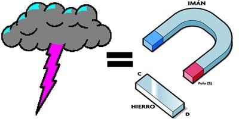

¿Qué son las interacciones?
son las acciones mutuas entre cuerpos que influyen en su comportamiento, manifestándose a través de fuerzas, energía o partículas, y se clasifican en dos grandes grupos: interacciones de contacto (empujar, fricción) y a distancia (gravedad, electromagnetismo).
Fuerzas fundamentales
Existen cuatro interacciones fundamentales: gravitatoria, electromagnética, nuclear fuerte y nuclear débil. Cada una mantiene el equilibrio del universo.
Aprende más sobre las interacciones fundamentales.